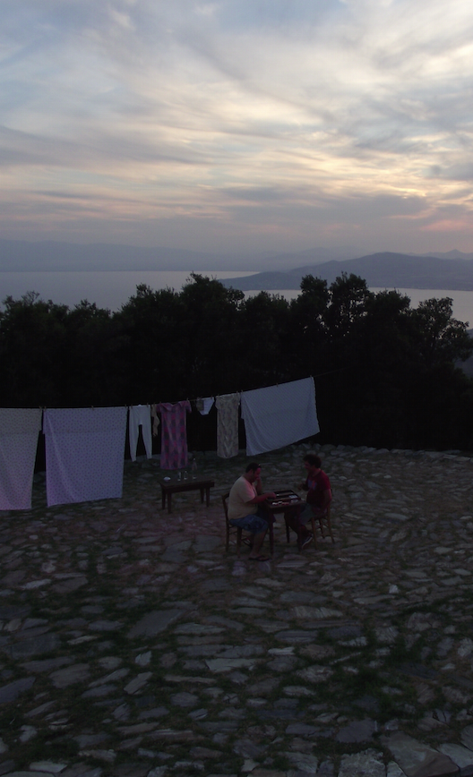
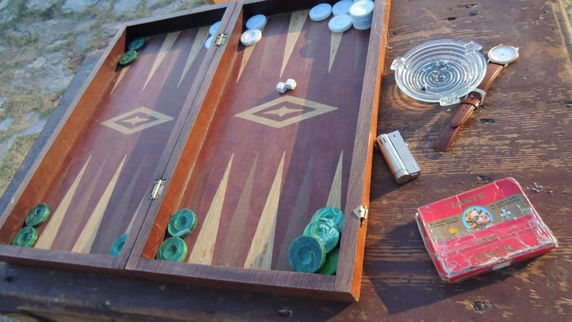
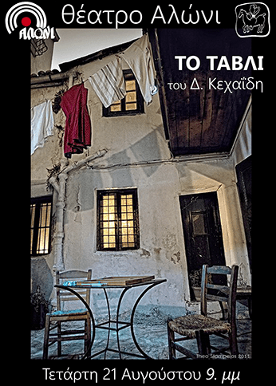
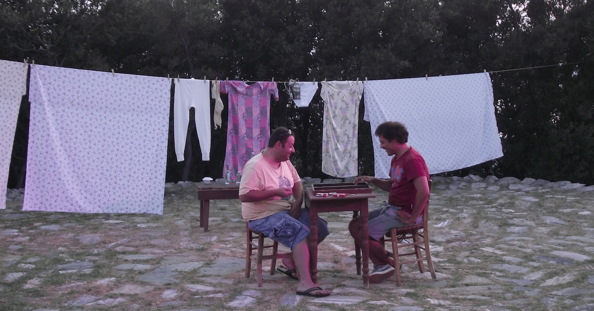
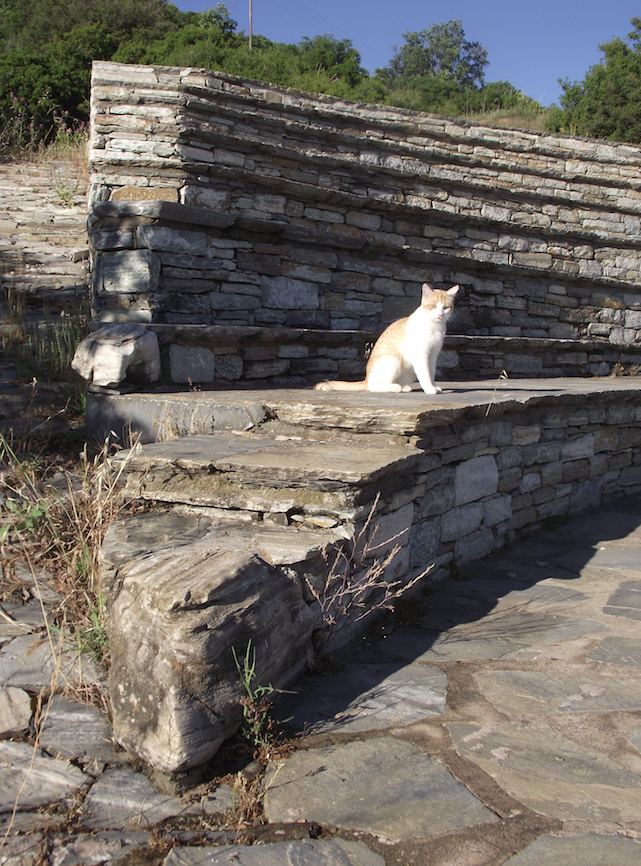

Το τάβλι του Δημήτρη Κεχαιδη
Με τους Κωνσταντίνο Κάππα & Σωκράτη Πατσίκα
Mια συμπαραγωγή του ΔΗΠΕΘΕ Καβάλας και του Θεατρικού Οργανισμού "Κ", η sold-out θεατρική κωμωδία ΤΟ ΤΑΒΛΙ επανέρχεται ανανεωμένη με τους Κωνσταντίνο Κάππα στο ρόλο του Κόλλια και τον Σωκράτη Πατσίκα στον ρόλο του Φώντα στον αγαπημένο του χώρο στην Αυλή του Ψυρρή απο τέλη Μαίου και στην συνέχεια θα περιοδεύσει σε όλη την Ελλάδα.
Το καλοκαίρι του 2013 για τρίτη συνεχόμενη χρονιά θα παρουσιαστεί στο κοινό της Αθήνας και των μεγαλύτερων πόλεων της περιφέρειας της Ελλάδας, το έργο του Δημήτρη Κεχαίδη ΤΟ ΤΑΒΛΙ, μια παράσταση σοκαριστικά επίκαιρη, μια σάτιρα της αλλοπρόσαλλης νεοελληνικής νοοτροπίας, με εκπληκτικούς διαλόγους σε σκηνοθεσία Κωνσταντίνου Κάππα, με τον ίδιο στον ρόλο του "Κόλλια" και τον Σωκράτη Πατσίκα στον ρόλο του "Φώντα"
Το «Τάβλι» παρουσιάστηκε στο Θέατρο Τέχνης το 1972. Σκηνοθεσία Κάρολος Κούν. Οταν αυτός ο εφιάλτης σήψης, κράτους και κοινωνίας, ήταν ακόμη στη σύλληψή του. Κι όταν ένας Φώντας (κομπιναδόρος, αδίστακτος αλλά και αφελής - γι' αυτό και αιωνίως αποτυχημένος) μπορούσε να παρασύρει έναν Κόλλια (μεροκαματιάρη λαχειοπώλη, ήρωα της Αντίστασης, με όνειρο να γράψει βιβλίο για τη ζωή του όπου τον βοηθά γριά Κολωνακιώτισσα) στα πλέον απίθανα -τότε- τερατώδη, πανούργα αλλά και αφελή πλάνα για να ζήσουν επιτέλους τα... κλέη μύθων και προγόνων.
Γαμπρός και κουνιάδος στην ίδια «εταιρεία» με την ακούσια βοήθεια της αδελφής και γυναίκας αντίστοιχα, της άφαντης αλλά συνεχώς παρούσας Καλλιόπης, υποχείριου του αδελφού της, Φώντα. Την έχει με δόλο πείσει να πάει στο σπίτι ενός τσιφλικά που την καλοβλέπει, δήθεν ως καμαριέρα, αφού ο στόχος είναι να του αποσπάσει τα απαιτούμενα χρήματα για τη μεγάλη μπίζνα.
Να ναυλώσουν δηλαδή πλοίο, να πάνε στη λιμοκτονούσα Μπιάφρα, να το γεμίσουν πεινασμένους νέγρους, τους οποίους μετά θα διοχετεύουν σ' όλη την Ελλάδα ως αγροτικά χέρια. Το δύσκολο είναι να πεισθεί ο μοιρολάτρης, ολιγαρκής (καφεδάκι - τάβλι - μεροδούλι - μεροφάι) κι ερωτευμένος με τη γυναίκα του Κόλιας, ερήμην του οποίου έχει μπει το σχέδιο στη πρώτη του φάση. Φώντα και Κόλια τους συναντάμε στην αυλίτσα του σπιτιού όπου συγκατοικούν, να παίζουν -τι άλλο;- τάβλι.
Ανάμεσα σε ζαριές κι ελιγμούς, προσπαθεί ο πρώτος να σερβίρει το άγνωστο ακόμα στον δεύτερο σχέδιο και ιδίως τη τρέχουσα ήδη φάση του στο πλουσιόσπιτο του Παλαιού Φαλήρου. Τον Ιούλιο του 2011 η ιδέα του Κωνσταντίνου Κάππα να ανεβάσει την συγκεκριμένη παράσταση όχι σε θέατρο αλλά στον φυσικό της χώρο ¨σε μια παλιά Αθηναική Αυλή¨ βρήκε ανταπόκριση απο τον ηθοποιό Νίκο Ορφανό. Το έργο σε σκηνοθεσία των δυο ηθοποιών παρουσιάστηκε με μεγάλη επιτυχία τόσο στην Αθήνα (30 παραστάσεις σε μια αυλή στου Ψυρρή) όσο και σε θέατρα και άλλους επιλεγμένους χώρους σε όλη την Ελλάδα. Απο το 2011 έως και τον Αύγουστο του 2012 η παράσταση συνέχισε την επιτυχημένη πορεία της περιοδεύοντας χειμώνα - καλοκαίρι και επιστρέφοντας πάντα στην Αθηναική Αυλή της.




